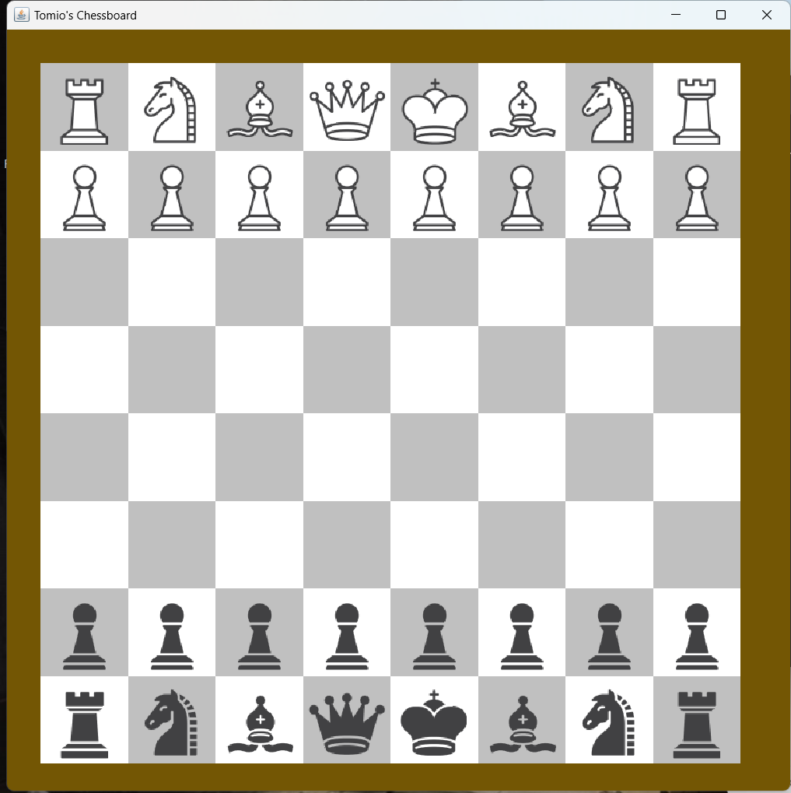

Loader at Lowes 2020-2021: brought in carts, helped customers ect.
Camp Counsellor in Sherbrooke 2018-2019: ran activities, supervised the kids
Projects
Chess Engine: Built a chess engine in java using a search tree with alpha-beta pruning and a reules based evaluation function. Optimised durther with multi-threading
Research project on GANs: Studied the use of Generative Adversarial Networks for use with machine vision.
Tools: Docker, Git, Android Studio,
Firebase, JIRA, Jenkins, Postman,
JSON, Eclipse, Visual Studio Code,
Microsoft Azure, Visual Studio
Languages: Azerbaijani, Turkish, Russian, English
Work Experience
Neo International Inc., Web Developer:
• Led the development of an MVC ASP.NET application to
streamline hiring, recruiting, and procurement.
• Proficiently utilized Visual Studio and C# for efficient
codebase management.
• Implemented Git for version control and collaborative
workflows.
• Managed database operations using SQL.
• Developed the company's Excel Addin with features like
'Clear Filter' and 'Paste-Organize' buttons for improved
productivity.
Projects
Mealer Application
• Used Android Studio to design an intuitive and visually
appealing user interface, enhancing user experience.
• Performed data management with Firebase and Android
Studio, enabling data handling and real-time synchronization.
• Applied software design principles to optimize data storage,
demonstrated proficiency in Agile development.
Chess Engine
Purpose
Built to practice object oriented coding with a larger project than worked on in school.
Tools USed
Built in Java using the Swing graphics library. No other libraries were used.
Impletmentation
First I built the chessboard following OOP principles. The board was stored in the board class as a two dimensional array of Pieces. Piece is and interface implemented by the Pawn class, the night class ect. Each class implemented the move function differently to account for it's unique movement pattern.

Figure 1 - Completed chessboard
The engine was created using an Alpha-Beta search tree which I implemented based on an online description. This searched possible board states for the most advantageous positions. The positions were scored based on an evaluation algorithm I wrote myself based on my chess knowledge and some tips from the internet.
Results
The chess engine performed at approximately 1800 elo, evaluated by having it play against chess bots of varying strength on Chess.com.